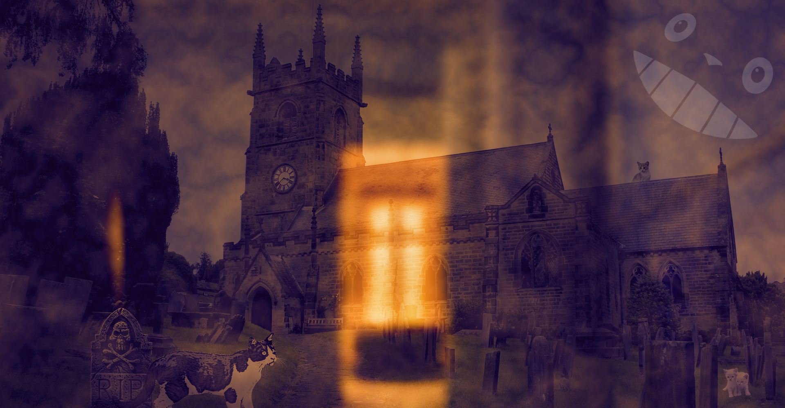

Colby Tang's Digital Media Portfolio

About Me
Majoring in Computer Science and minoring in Video Game Development, I am a senior at St Edward's University developing software and games. I've had experience in graphic design, photography, and video editing for many years now. I make YouTube videos, logos, games, and small programs in my spare time.
Portfolio Introduction
This portfolio showcases the work I've done in my Interactive Media course at St. Edward's University. Programs used include Audacity, Adobe Photoshop, Illustrator, Premiere, and Animate. Additionally, this web page is being hosted on my local web server using Apache on my Raspberry Pi.
Click on the images for a full-sized version.

Adobe Photoshop Layers Practice
Using various images I arranged a scene where each image is on its own Photoshop layer as practice. I added a few adjustment layers and some glow to the subjects caught in the UFO beam.
HTML Website Practice
I used a Glitch site to practice HTML by making a website for my cat Kiwi. I kept the page simple to make it easy to read and look at. This practice helped me with this portfolio that you're looking at!
Adobe Illustrator Logo - Katt Kafé

Using Adobe Illustrator, I created a banner for a mock company. I wanted to convey a friendly environment with cats through my design and I did this through a number of ways.
I used a pale blue background to give the banner an overall softer look and a welcoming palette. I drew a cat head with a boba tea drink on top as a silly logo but as it also conveys a chill environment since the cat head seems content with having a drink on its head. I kept the text Katt Kafé simple to read to give a sense of simplicity and cleanliness. There’s nothing else to the place: you eat, drink, and hang out with cats. I kept the red and green color scheme to the text/logo since they are complementary colors and go well aesthetically. Choosing boba tea as the drink to showcase the food aspect of the business attracts people that are following the current boba tea trend. Additionally, boba tea has a distinct look that people can recognize.
I originally wanted the text to have a unique shape to it but instead I kept it simple and geometric to keep that simplicity feel to it. The boba tea was not shortened to match the straight verticality of the text.
Creepy Cat Graveyard Scene
{kind=link}
A foggy and spooky graveyard scene at dusk made in Photoshop. It's also filled with killer kittens. I used Hard Light on one of the Gradient Map layers to simulate an evening look to the picture. For the "window reflection", I blurred one of the backgrounds and blended with Hard Light to give a reflection feel to it. I also rendered some clouds and used Screen to give a foggy look. Screen is also applied to my profile picture to remove the black part of the image.
Audacity Practice - Podcast Intro
I wanted to create a Planet Earth sounding podcast intro so I used frog sounds, ocean sounds, cat's meow to convey multiple ecosystems. I lowered each track's volume by 10 decibels since I use headphones with a DAC, so everything is loud to me. I took the audio of Theatre Days and took the last 45 seconds of it. The first few seconds of that track, I faded in the volume and added a reverb. With the frog noises, the croaks were unevenly spaced out which didn't go well with the beat so I manually cut them to sync it to the music.
Bouncy Totoro Ball
{kind=link}
Made with Adobe Animate, this is based on my bouncy ball assignment that I did last semester in my Intro to Game Animation class. The animation concept of squish and stretch to convey bounciness is shown here. It is another Totoro-based drawing as you can see.
Short Montage
Using Adobe Premiere, After Effects, and my phone, I created a montage of my day.
Concept: The concept of my film is a slice of life montage of what my typical day looks like in 2020.
Editing: I stitched together my shots to sync up with the music which somewhat acts as sound effects for some scenes. I created a quick intro for the title using Adobe After Effects.
Sound: I chose Span by Moby since it has an electronic theme to it which complements the technology shown in the video. It also has a calm but steady beat which keeps viewers interested in the still shots.
Experience: Making the film was kinda fun, I typically make YouTube videos using video game footage I captured so this was the first time I made a video using real life footage.
© 2020 by Colby Tang. Created with Visual Studio Code and hosted locally using Apache.